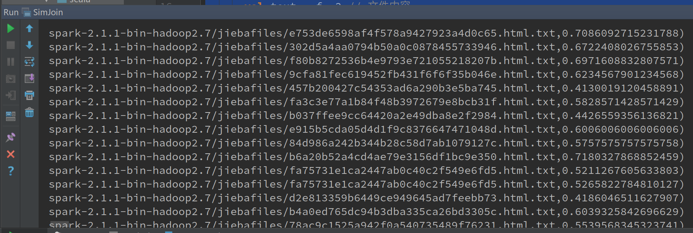

基于SPARK的分布式网页近似度检测
Posted on Sun 09 July 2017 in Tech
前言
随着Web上数量的急剧增长，近似镜像网页的数量也在不断增加。近似镜像网页的存在，严重影响了搜索引擎的检索结果。如果我们能将搜集到的网页中的近似镜像网页去掉，可以提高搜集系统和索引系统效率，用户查询时也不会出现大量内容重复的网页。去除镜像网页即需要网页近似度检测算法。实验基于相似性连接实现了基于SPARK的分布式网页近似度检测，对5000个网页进行了相似度检测，试图找出所有相似的网页。实验使用的网页来源与人才招聘网站的电子简历，共有5000份，由于我们只关心其中的简历内容，因此需要去除简历内容外的HTML标签，网页样式、代码。在去除了无关内容后，即可进行近似检测，大数据环境下，数据量巨大，运用传统的方式进行相似性连接效率极低，实验选择了相似性连接查询作为底层的算法实现，作为一种分布式算法，实验选择了Spark作为分布式计算框架。
相似性连接查询，即查找相似的数据对象对，具有广泛的应用领域，例如相似网页检、实体解析、数据清洗和相似图像检索等。 在相似网页检测中，使用相似性连接等技术识别相似的网页，不但可以帮助网页搜索引擎执行聚焦爬行，提高搜索结果的质量和多样性，还可以识别垃圾邮件。在实体解析中，使用相似性连接技术，可以找到企业数据库里相似的顾客，匹配产品报价等。在数据清洗中，使用相似性连接技术，可以为不同数 据源集成提供一致、准确的数据。在相似图像检索 中，使用相似性连接技术检索出相似的图像，可以分析图像的来源，查找高清图像等，当前比较常用的有字符串、集合和向量的相似性连接算法。
选用平台描述
实验运用的是spark平台，选择的编程语言是scala中，操作系统是ubuntu。
- spark：2.1.0
- Scala：2.10.6
- Ubuntu 16.04.2 LTS
数据集描述
原始数据集为5000个左右的简历网页， 大致格式如下：
经过分词，去除重复词，HTML标签，停用词后，输出如下，作为Spark文档近似度检测的输入源。
设计逻辑
数据清洗与中文分词
#! /bin/python
from pyquery import PyQuery
import jieba
import os
STOP_WORDS = frozenset(('a', 'an', 'and', 'are', 'as', 'at', 'be', 'by',
'for', 'from', 'have', 'if', 'in', 'is', 'it', 'may',
'not', 'of', 'on', 'or', 'tbd', 'that', 'the', 'this',
'to', 'us', 'we', 'when', 'will', 'with', 'yet',
'you', 'your','的','了','和', '\n', '', ' '))
for root, dirs, files in os.walk("webResume"):
for f in files:
web_file = open(os.path.join(root, f))
doc = PyQuery(web_file.read())
doc("style").remove()
doc("script").remove()
text = doc.text()
seg_list = jieba.cut(text)
results = set(seg_list) - STOP_WORDS
write_file = open("./jiebafiles/" + f + ".txt", "w")
write_file.write("\t".join(results))
遍历目录下的所有html文件，去除html文件中的所有标签、样式、代码。使用中文分词对过滤后的HTML文件进行分词，同时过滤掉重复的词、停用词，留下这份简历网页的关键词，写入另一份文件，作为近似度检测的输入。
近似度检测
import org.apache.spark.SparkContext
import org.apache.spark.SparkConf
object SimJoin {
def main(args: Array[String]) {
val conf = new SparkConf().setAppName("SimJion").setMaster("master")
var sc = new SparkContext(conf)
var files = sc.wholeTextFiles(
"/home/chih/BD/spark-2.1.1-bin-hadoop2.7/jiebafiles/*.txt", 8)
var pairs = files.flatMap(f => {
val rid = f._1 // 文件名
val text = f._2 // 文件内容
val tokens = text.split("\t") // 分割
.filter(w => !w.isEmpty) // 移除空token
var map = tokens.groupBy(identity).mapValues(_.length)
map.map({ case (t, c) => (t, (rid, tokens.length, c)) })
})
var groups = pairs.groupByKey().flatMap({ case (t, u) =>
u.toList.combinations(2)
.map(k => (((k.head._1, k.head._2), (k(1)._1, k(1)._2)),
(t, Math.min(k.head._3, k(1)._3))))
})
var grouped = groups.reduceByKey((a, b) => (a._1, a._2 + b._2))
.map(t => (t._1, t._2._2))
val min_t = 0.4
val max_t = 0.99
var results = grouped.map(t => (t._1._1._1, t._1._2._1, t._2.toDouble
/ (t._1._1._2 + t._1._2._2 - t._2)))
.filter(t => t._3 >= min_t && t._3 < max_t)
results.take(20).foreach(println)
sc.stop()
}
}
从目录中读取所有已经经过分词的简介文档，生成文件名、文件内容的对，供后续处理。建立倒排索引，将记录的RID插入到其项目的倒排索引中的对应Item中。生成候选集，通过倒排索引的item两两配对生成候选对，并记录相同候选对的数量，从而最终生成最终的候选集。 从候选集中找出符合要求的结果，通过Jaccard 系数阈值计算出对应的相似度阈值，从而在候选集中找出相应的结果。
运行部署描述
Spark 官方提供了三种集群部署方案： Standalone, Mesos, YARN。在试验环境下，Standalone 模式就足够了，因此本实验选用Standalone 模式。如果如果已经有 Yarn 或者 Mesos 环境，也是很方便地迁移到新的资源调度框架上的。
注意
为了避免权限问题影响实验，本例中的演示均为 root 权限，当然在生产环境中，为了安全起见，需要使用单独的用户启动运行Spark。注意，除非特别说明，所有的操作需要在每台机器上都操作一遍，你可以使用Xshell，ansible简化操作。
环境准备
安装系统
我使用VirtualBox虚拟机软件创建三台Ubuntu服务器，均使用纯净安装，集群准备为1个master，2个slave。每台的均配置两张网卡，其中一张nat网络，用于连接外网，更新安装软件包用，另一张使用host-only模式，用于宿主机和虚拟机、 虚拟机直接通讯使用。如下图所示。

配置hosts
Host-Only网卡的IP地址是顺序分配的，在这里，三台虚拟机Host-Only网卡的IP地址分别为 192.168.56.101、 192.168.56.102、 192.168.56.103 。
在每台主机上修改host文件，在文件末尾添加以下三行。
vim /etc/hosts
192.168.56.101 master
192.168.56.102 slave1
192.168.56.103 slave2
配置之后相互ping一下看是否生效。
配置SSH 免密码登录
安装Openssh server
sudo apt install openssh-server
在所有机器上都生成私钥和公钥
ssh-keygen -t rsa #一路回车
需要让机器间都能相互访问，就把每个机子上的id_rsa.pub发给master节点，传输公钥可以用scp来传输。
scp ~/.ssh/id_rsa.pub spark@master:~/.ssh/id_rsa.pub.slave1
在master上，将所有公钥加到用于认证的公钥文件authorized_keys中
cat ~/.ssh/id_rsa.pub* >> ~/.ssh/authorized_keys
将公钥文件authorized_keys分发给每台slave
scp ~/.ssh/authorized_keys spark@slave1:~/.ssh/
在每台机子上验证SSH无密码通信
ssh master
ssh slave1
ssh slave2
安装JDK
直接通过包管理安装openJDK 8.
sudo apt install openjdk-8-jdk
使用以下命令配置环境变量并使之生效：
echo "
# set environment variable
export JAVA_HOME=/usr/lib/jvm/java-8-openjdk-amd64
" >> /etc/profile.d/spark.sh
source /etc/profile.d/spark.sh #使之生效
验证 Java 是否安装成功
java -version #如果打印出版本信息，则说明安装成功
安装Spark
使用以下命令下载并安装Spark：
wget ${mirror}/apache/spark/spark-2.1.0/ \
spark-${spark_pkgver}-bin-hadoop${hadoop_pkgver}.tgz
tar -xzvf spark-${spark_pkgver}-bin-hadoop${hadoop_pkgver}.tgz
mv spark-${spark_pkgver}-bin-hadoop${hadoop_pkgver} /usr/local/spark
配置 Hadoop
进入配置目录 /usr/local/spark/conf 准备修改配置文件。
在slaves中配置slave节点的ip或者host，
vim ./slaves
spark-slave1
spark-slave2
配置spark-env.sh
cp /usr/local/spark/conf/spark-env.sh.template /usr/local/spark/conf/spark-env.sh
echo "SPARK_MASTER_HOST=master" >> /usr/local/spark/conf/spark-env.sh
echo "SPARK_LOCAL_IP={修改为每台机器对应的名称}" >> /usr/local/spark/conf/spark-env.sh
启动Spark
sudo -s
su -
sbin/start-all.sh
如果没有问题，进入Spark的Web管理页面： http://master:8080
脚本安装Spark
为了方便部署Spark，我简单写了一个Shell脚本，可以方便地几步搭建一个3节点的Spark集群。脚本地址为：
https://github.com/chih7/spark-install/
脚本只在Ubuntu 16.04下进行了测试，但其他版本的Ubuntu和debian应该也是可以使用。
首先使用VirtualBox安装一台Ubuntu服务器，在里面执行以下命令：
sudo -s
su -
git clone https://github.com/chih7/spark-install.git
cd ./spark_install
./install-spark.sh
reboot
重启完成后，
克隆这个虚拟机到两台虚拟机，记得修改克隆机的配置文件/usr/local/spark/conf/spark-env.sh中的SPARK_LOCAL_IP，之后就可以启动Spark集群了。
sudo -s
su -
vim /usr/local/spark/conf/spark-env.sh # change SPARK_LOCAL_IP=spark-xxxx
/usr/local/spark/sbin/start-all.sh
实验结果描述

运行代码后，可以看到生成了一个DAG图，即为Spark的计算路径，其中有三个stage。最后输出了超出一定阈值的所有相似的文档对，同时给出了相似度系数。
出现的问题
在运行中出现java.io.IOException: No space left on device错误，经过Google搜索，发现Spark默认使用 /tmp目录存储中间结果，而/tmp目录为tmpfs目录，出于内存文件系统，默认大小仅为内存大小的一半。
为了解决这个问题，需要自定义SPARK_LOCAL_DIRS环境变量到一个足够大的目录下，我这里把它改到了Spark的安装目录。